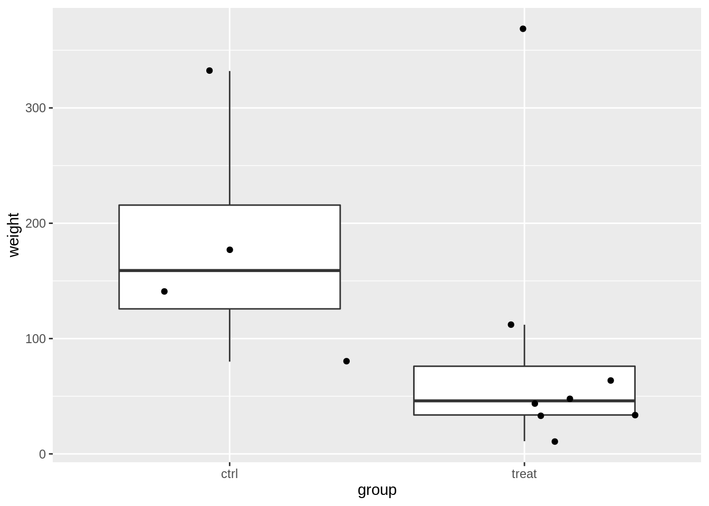

## ── Attaching packages ─────────────────────────────────────── tidyverse 1.3.1 ──
## ✔ ggplot2 3.3.5 ✔ purrr 0.3.4
## ✔ tibble 3.1.6 ✔ dplyr 1.0.8
## ✔ tidyr 1.2.0 ✔ stringr 1.4.0
## ✔ readr 2.1.2 ✔ forcats 0.5.1
## ── Conflicts ────────────────────────────────────────── tidyverse_conflicts() ──
## ✖ dplyr::filter() masks stats::filter()
## ✖ dplyr::lag() masks stats::lag()
Power
The power of a test is defined as:
\[P(p <
\alpha | H_1)\] This is the probability to reject the nulhypothesis at the significance level \(\alpha\) given that the alternative hypothesis is true.
The power depends on:
- the real effect size in the population \(\mathbf{L}^T\boldsymbol{\beta}\).
- the number of observations: SE and df.
- Choice of designpoints
- Choice of significance-level \(\alpha\).
We will evaluate the power using simulation.
Rodents
A biologist examined the effect of a fungal infection on the eating behavior of rodents. Infected apples were offered to a group of eight rodents, and sterile apples were offered to a group of 4 rodents. The amount of grams of apples consumed per kg body weight are given in the dataset below.
rodents <- data.frame(
weight = c(11, 33, 48, 34, 112, 369, 64, 44, 177, 80, 141, 332),
group = as.factor(c(rep("treat", 8), rep("ctrl", 4)))
)
rodents
Data exploration
rodents %>%
ggplot(aes(x = group, y = weight)) +
geom_boxplot(outlier.shape = NA) +
geom_jitter()

rodents %>%
ggplot(aes(sample = weight)) +
geom_qq() +
geom_qq_line() +
facet_wrap(~group)

In the data exploration we do not have enough data to evaluate the assumptions.
Suppose that the assumptions are valid and that standard deviation in the population would be equal to the ones you observed in the experiment.
- What is the power of the experiment if the effect size and standard deviation in the population would be equal to the ones you observed in the experiment
- What would the power by if number of rodents would balanced in both groups
- How many observations would you need to pick up the treatment effect with a power of 90%?
- How many observations would you need to pick up the treatment effect of 60 g/kg with a power of 90%?
Analysis
We will model the data using a linear model with one dummy variable.
\[
y_i = \beta_0 + \beta_1 x_{t,i} +
\epsilon_i
\] with \(x_{p,i} = 0\) if the rodent is subjected the control treatment with sterile apples and \(x_{t,i} = 1\) if rodent receives the treatment with infected apples.
The average difference in relative abundance of Staphylococcus of patients of the transplant and the placebo group.
\[
\hat \beta_1 = \bar y_t - \bar y_c
\]
- \(H_0\): rodents eat consume on average the same amount of apples per kg body weight when they are fed with sterile or with infected apples.
- \(H_1\): the average amount of apples in g/kg body weight is different when rodents are fed with sterile then as when they are fed with infected apples.
lm1 <- lm(weight ~ group, rodents)
summary(lm1)
##
## Call:
## lm(formula = weight ~ group, data = rodents)
##
## Residuals:
## Min 1Q Median 3Q Max
## -102.500 -55.625 -41.438 1.531 279.625
##
## Coefficients:
## Estimate Std. Error t value Pr(>|t|)
## (Intercept) 182.50 57.03 3.200 0.00949 **
## grouptreat -93.12 69.85 -1.333 0.21204
## ---
## Signif. codes: 0 '***' 0.001 '**' 0.01 '*' 0.05 '.' 0.1 ' ' 1
##
## Residual standard error: 114.1 on 10 degrees of freedom
## Multiple R-squared: 0.1509, Adjusted R-squared: 0.06601
## F-statistic: 1.777 on 1 and 10 DF, p-value: 0.212
With the current study and when we assume that the assumptions of the model hold, we conclude that the amount of apples that rodents on average consume does not differ significantly between the group that was fed with sterile apples and the group that was fed with infected apples.
Power analyses
Question 1
What is the power of the experiment if the effect size and standard deviation in the population would be equal to the ones you observed in the experiment?
Simulation function
We provide you with a function to simulate data similar to that of our experiment under our model assumptions.
simFast <- function(form, data, betas, sd, contrasts, alpha = .05, nSim = 10000) {
ySim <- rnorm(nrow(data) * nSim, sd = sd)
dim(ySim) <- c(nrow(data), nSim)
design <- model.matrix(form, data)
ySim <- ySim + c(design %*% betas)
ySim <- t(ySim)
### Fitting
fitAll <- limma::lmFit(ySim, design)
### Inference
varUnscaled <- c(t(contrasts) %*% fitAll$cov.coefficients %*% contrasts)
contrasts <- fitAll$coefficients %*% contrasts
seContrasts <- varUnscaled^.5 * fitAll$sigma
tstats <- contrasts / seContrasts
pvals <- pt(abs(tstats), fitAll$df.residual, lower.tail = FALSE) * 2
return(mean(pvals < alpha))
}
Without going into the full code details, this function allows us to simulate data similar to that of our experiment under our model assumptions, given the following inputs:
form: model formula for the experiment we want to simulatedata: the target dataset on which we want to base our simulations onbetas: the linear regression coefficients for the target datasetsd: the residual standard errors from the linear regression model fit on the target datasetcontrasts: comparison of interest, i.e. which (combination of) model parameters we would like to assessalpha: alpha-level at which to conduct the hypothesis testingnSim: number of datasets we would like to simulate
To simulate new data based on our target dataset ç, we will need to fill in all the arguments to the simFast function.
Hint: for the betas and sd, we will need to fit a linear model first!
power1 <- simFast(
form = ...,
data = ...,
betas = ...,
sd = ...,
contrasts = ...,
alpha = ...,
nSim = ...
)
power1
Interpret the outcome.
Question 2
What would the power by if number of rodents would balanced in both groups? Again, we simulate a large number of new experiments. Adjust one more more of the inputs to the simFast to allow for addressing this question.
power2 <- simFast(
form = ...,
data = ...,
betas = ...,
sd = ...,
contrasts = ...,
alpha = ...,
nSim = ...
)
power2
Question 3
How many observations would you need to pick up the treatment effect with a power of 90%?
This will require us to establish a relationship between sample size and power. In turn, this will require us to perform a “parameter sweep” over different values of sample size and compute the power for each of them.
Question 4
Suppose that we would like to pick up an effect size of \(\beta_1 = 60 g/kg\). How many samples would be required in each group to obtain a power of 90%?
Note, that
- we do a two-sided test so the sign of the effect size is arbitrary.
- the intercept in the power analysis is also arbitrary so we could also set it at 0.
LS0tCnRpdGxlOiAiRXhwZXJpbWVudGFsIERlc2lnbiBJSTogcmVwbGljYXRpb24gYW5kIHBvd2VyIGV4ZXJjaXNlIDEiCmF1dGhvcjogIkxpZXZlbiBDbGVtZW50ICYgQWxleGFuZHJlIFNlZ2VycyIKZGF0ZTogInN0YXRPbWljcywgR2hlbnQgVW5pdmVyc2l0eSAoaHR0cHM6Ly9zdGF0b21pY3MuZ2l0aHViLmlvKSIKLS0tCgoKPGEgcmVsPSJsaWNlbnNlIiBocmVmPSJodHRwczovL2NyZWF0aXZlY29tbW9ucy5vcmcvbGljZW5zZXMvYnktbmMtc2EvNC4wIj48aW1nIGFsdD0iQ3JlYXRpdmUgQ29tbW9ucyBMaWNlbnNlIiBzdHlsZT0iYm9yZGVyLXdpZHRoOjAiIHNyYz0iaHR0cHM6Ly9pLmNyZWF0aXZlY29tbW9ucy5vcmcvbC9ieS1uYy1zYS80LjAvODh4MzEucG5nIiAvPjwvYT4KCmBgYHtyfQpsaWJyYXJ5KHRpZHl2ZXJzZSkKYGBgCgojIFBvd2VyCgpUaGUgcG93ZXIgb2YgYSB0ZXN0IGlzIGRlZmluZWQgYXM6CgokJFAocCA8ClxhbHBoYSB8IEhfMSkkJApUaGlzIGlzIHRoZSBwcm9iYWJpbGl0eSB0byByZWplY3QgdGhlIG51bGh5cG90aGVzaXMgYXQgdGhlIHNpZ25pZmljYW5jZSBsZXZlbCAkXGFscGhhJCBnaXZlbiB0aGF0IHRoZSBhbHRlcm5hdGl2ZSBoeXBvdGhlc2lzIGlzIHRydWUuCgpUaGUgcG93ZXIgZGVwZW5kcyBvbjoKCi0gdGhlIHJlYWwgZWZmZWN0IHNpemUgaW4gdGhlIHBvcHVsYXRpb24gJFxtYXRoYmZ7TH1eVFxib2xkc3ltYm9se1xiZXRhfSQuCi0gdGhlIG51bWJlciBvZiBvYnNlcnZhdGlvbnM6IFNFIGFuZCBkZi4KLSBDaG9pY2Ugb2YgZGVzaWducG9pbnRzCi0gQ2hvaWNlIG9mIHNpZ25pZmljYW5jZS1sZXZlbCAkXGFscGhhJC4KCldlIHdpbGwgZXZhbHVhdGUgdGhlIHBvd2VyIHVzaW5nIHNpbXVsYXRpb24uCgojIFJvZGVudHMKCkEgYmlvbG9naXN0IGV4YW1pbmVkIHRoZSBlZmZlY3Qgb2YgYSBmdW5nYWwgaW5mZWN0aW9uIG9uIHRoZSBlYXRpbmcgYmVoYXZpb3Igb2Ygcm9kZW50cy4KSW5mZWN0ZWQgYXBwbGVzIHdlcmUgb2ZmZXJlZCB0byBhIGdyb3VwIG9mIGVpZ2h0IHJvZGVudHMsIGFuZCBzdGVyaWxlIGFwcGxlcyB3ZXJlIG9mZmVyZWQgdG8gYSBncm91cCBvZiA0IHJvZGVudHMuIFRoZSBhbW91bnQgb2YgZ3JhbXMgb2YgYXBwbGVzIGNvbnN1bWVkIHBlciBrZyBib2R5IHdlaWdodCBhcmUgZ2l2ZW4gaW4gdGhlIGRhdGFzZXQgYmVsb3cuCgpgYGB7cn0Kcm9kZW50cyA8LSBkYXRhLmZyYW1lKAogIHdlaWdodCA9IGMoMTEsIDMzLCA0OCwgMzQsIDExMiwgMzY5LCA2NCwgNDQsIDE3NywgODAsIDE0MSwgMzMyKSwKICBncm91cCA9IGFzLmZhY3RvcihjKHJlcCgidHJlYXQiLCA4KSwgcmVwKCJjdHJsIiwgNCkpKQopCnJvZGVudHMKYGBgCgoKIyMgRGF0YSBleHBsb3JhdGlvbgoKYGBge3J9CnJvZGVudHMgJT4lCiAgZ2dwbG90KGFlcyh4ID0gZ3JvdXAsIHkgPSB3ZWlnaHQpKSArCiAgZ2VvbV9ib3hwbG90KG91dGxpZXIuc2hhcGUgPSBOQSkgKwogIGdlb21faml0dGVyKCkKCnJvZGVudHMgJT4lCiAgZ2dwbG90KGFlcyhzYW1wbGUgPSB3ZWlnaHQpKSArCiAgZ2VvbV9xcSgpICsKICBnZW9tX3FxX2xpbmUoKSArCiAgZmFjZXRfd3JhcCh+Z3JvdXApCmBgYAoKSW4gdGhlIGRhdGEgZXhwbG9yYXRpb24gd2UgZG8gbm90IGhhdmUgZW5vdWdoIGRhdGEgdG8gZXZhbHVhdGUgdGhlIGFzc3VtcHRpb25zLgoKU3VwcG9zZSB0aGF0IHRoZSBhc3N1bXB0aW9ucyBhcmUgdmFsaWQgYW5kIHRoYXQgc3RhbmRhcmQgZGV2aWF0aW9uIGluIHRoZSBwb3B1bGF0aW9uIHdvdWxkIGJlIGVxdWFsIHRvIHRoZSBvbmVzIHlvdSBvYnNlcnZlZCBpbiB0aGUgZXhwZXJpbWVudC4KCjEuIFdoYXQgaXMgdGhlIHBvd2VyIG9mIHRoZSBleHBlcmltZW50IGlmIHRoZSBlZmZlY3Qgc2l6ZSBhbmQgc3RhbmRhcmQgZGV2aWF0aW9uIGluIHRoZSBwb3B1bGF0aW9uIHdvdWxkIGJlIGVxdWFsIHRvIHRoZSBvbmVzIHlvdSBvYnNlcnZlZCBpbiB0aGUgZXhwZXJpbWVudAoyLiBXaGF0IHdvdWxkIHRoZSBwb3dlciBieSBpZiBudW1iZXIgb2Ygcm9kZW50cyB3b3VsZCAgYmFsYW5jZWQgaW4gYm90aCBncm91cHMKMy4gSG93IG1hbnkgb2JzZXJ2YXRpb25zIHdvdWxkIHlvdSBuZWVkIHRvIHBpY2sgdXAgdGhlIHRyZWF0bWVudCBlZmZlY3Qgd2l0aCBhIHBvd2VyIG9mIDkwJT8KNC4gSG93IG1hbnkgb2JzZXJ2YXRpb25zIHdvdWxkIHlvdSBuZWVkIHRvIHBpY2sgdXAgdGhlIHRyZWF0bWVudCBlZmZlY3Qgb2YgNjAgZy9rZyB3aXRoIGEgcG93ZXIgb2YgOTAlPwoKIyBBbmFseXNpcwoKV2Ugd2lsbCBtb2RlbCB0aGUgZGF0YSB1c2luZyBhIGxpbmVhciBtb2RlbCB3aXRoIG9uZSBkdW1teSB2YXJpYWJsZS4KCiQkCnlfaSA9IFxiZXRhXzAgKyBcYmV0YV8xIHhfe3QsaX0gKwpcZXBzaWxvbl9pCiQkCndpdGggJHhfe3AsaX0gPSAwJCBpZiB0aGUgcm9kZW50IGlzIHN1YmplY3RlZCB0aGUgY29udHJvbCB0cmVhdG1lbnQgd2l0aCBzdGVyaWxlIGFwcGxlcyBhbmQgJHhfe3QsaX0gPSAxJCBpZiByb2RlbnQgcmVjZWl2ZXMgdGhlIHRyZWF0bWVudCB3aXRoIGluZmVjdGVkIGFwcGxlcy4KCi0gRXN0aW1hdGVkIGVmZmVjdCBzaXplPwoKVGhlIGF2ZXJhZ2UgZGlmZmVyZW5jZSBpbiByZWxhdGl2ZSBhYnVuZGFuY2Ugb2YgU3RhcGh5bG9jb2NjdXMgb2YgcGF0aWVudHMKb2YgdGhlIHRyYW5zcGxhbnQgYW5kIHRoZSBwbGFjZWJvIGdyb3VwLgoKJCQKXGhhdCBcYmV0YV8xID0gXGJhciB5X3QgLSBcYmFyIHlfYwokJAoKLSAkSF8wJDogcm9kZW50cyBlYXQgY29uc3VtZSBvbiBhdmVyYWdlIHRoZSBzYW1lIGFtb3VudCBvZiBhcHBsZXMgcGVyIGtnIGJvZHkgd2VpZ2h0IHdoZW4gdGhleSBhcmUgZmVkIHdpdGggc3RlcmlsZSBvciB3aXRoIGluZmVjdGVkIGFwcGxlcy4KLSAkSF8xJDogdGhlIGF2ZXJhZ2UgYW1vdW50IG9mIGFwcGxlcyBpbiBnL2tnIGJvZHkgd2VpZ2h0IGlzIGRpZmZlcmVudCB3aGVuIHJvZGVudHMgYXJlIGZlZCB3aXRoIHN0ZXJpbGUgdGhlbiBhcyB3aGVuIHRoZXkgYXJlIGZlZCB3aXRoIGluZmVjdGVkIGFwcGxlcy4KCmBgYHtyfQpsbTEgPC0gbG0od2VpZ2h0IH4gZ3JvdXAsIHJvZGVudHMpCnN1bW1hcnkobG0xKQpgYGAKCldpdGggdGhlIGN1cnJlbnQgc3R1ZHkgYW5kIHdoZW4gd2UgYXNzdW1lIHRoYXQgdGhlIGFzc3VtcHRpb25zIG9mIHRoZSBtb2RlbCBob2xkLCB3ZSBjb25jbHVkZSB0aGF0IHRoZSBhbW91bnQgb2YgYXBwbGVzIHRoYXQgcm9kZW50cyBvbiBhdmVyYWdlIGNvbnN1bWUgZG9lcyBub3QgZGlmZmVyIHNpZ25pZmljYW50bHkgYmV0d2VlbiB0aGUgZ3JvdXAgdGhhdCB3YXMgZmVkIHdpdGggc3RlcmlsZSBhcHBsZXMgYW5kIHRoZSBncm91cCB0aGF0IHdhcyBmZWQgd2l0aCBpbmZlY3RlZCBhcHBsZXMuCgojIFBvd2VyIGFuYWx5c2VzCgojIyBRdWVzdGlvbiAxCgpXaGF0IGlzIHRoZSBwb3dlciBvZiB0aGUgZXhwZXJpbWVudCBpZiB0aGUgZWZmZWN0IHNpemUgYW5kIHN0YW5kYXJkIGRldmlhdGlvbgppbiB0aGUgcG9wdWxhdGlvbiB3b3VsZCBiZSBlcXVhbCB0byB0aGUgb25lcyB5b3Ugb2JzZXJ2ZWQgaW4gdGhlIGV4cGVyaW1lbnQ/CgojIyBTaW11bGF0aW9uIGZ1bmN0aW9uCgpXZSBwcm92aWRlIHlvdSB3aXRoIGEgZnVuY3Rpb24gdG8gc2ltdWxhdGUgZGF0YSBzaW1pbGFyIHRvIHRoYXQgb2Ygb3VyCmV4cGVyaW1lbnQgdW5kZXIgb3VyIG1vZGVsIGFzc3VtcHRpb25zLgoKYGBge3J9CnNpbUZhc3QgPC0gZnVuY3Rpb24oZm9ybSwgZGF0YSwgYmV0YXMsIHNkLCBjb250cmFzdHMsIGFscGhhID0gLjA1LCBuU2ltID0gMTAwMDApIHsKICB5U2ltIDwtIHJub3JtKG5yb3coZGF0YSkgKiBuU2ltLCBzZCA9IHNkKQogIGRpbSh5U2ltKSA8LSBjKG5yb3coZGF0YSksIG5TaW0pCiAgZGVzaWduIDwtIG1vZGVsLm1hdHJpeChmb3JtLCBkYXRhKQogIHlTaW0gPC0geVNpbSArIGMoZGVzaWduICUqJSBiZXRhcykKICB5U2ltIDwtIHQoeVNpbSkKCiAgIyMjIEZpdHRpbmcKICBmaXRBbGwgPC0gbGltbWE6OmxtRml0KHlTaW0sIGRlc2lnbikKCiAgIyMjIEluZmVyZW5jZQogIHZhclVuc2NhbGVkIDwtIGModChjb250cmFzdHMpICUqJSBmaXRBbGwkY292LmNvZWZmaWNpZW50cyAlKiUgY29udHJhc3RzKQogIGNvbnRyYXN0cyA8LSBmaXRBbGwkY29lZmZpY2llbnRzICUqJSBjb250cmFzdHMKICBzZUNvbnRyYXN0cyA8LSB2YXJVbnNjYWxlZF4uNSAqIGZpdEFsbCRzaWdtYQogIHRzdGF0cyA8LSBjb250cmFzdHMgLyBzZUNvbnRyYXN0cwogIHB2YWxzIDwtIHB0KGFicyh0c3RhdHMpLCBmaXRBbGwkZGYucmVzaWR1YWwsIGxvd2VyLnRhaWwgPSBGQUxTRSkgKiAyCiAgcmV0dXJuKG1lYW4ocHZhbHMgPCBhbHBoYSkpCn0KYGBgCgpXaXRob3V0IGdvaW5nIGludG8gdGhlIGZ1bGwgY29kZSBkZXRhaWxzLCB0aGlzIGZ1bmN0aW9uIGFsbG93cyB1cyB0byBzaW11bGF0ZQpkYXRhIHNpbWlsYXIgdG8gdGhhdCBvZiBvdXIgZXhwZXJpbWVudCB1bmRlciBvdXIgbW9kZWwgYXNzdW1wdGlvbnMsIGdpdmVuIHRoZQpmb2xsb3dpbmcgaW5wdXRzOgoKLSBgZm9ybWA6IG1vZGVsIGZvcm11bGEgZm9yIHRoZSBleHBlcmltZW50IHdlIHdhbnQgdG8gc2ltdWxhdGUKLSBgZGF0YWA6IHRoZSB0YXJnZXQgZGF0YXNldCBvbiB3aGljaCB3ZSB3YW50IHRvIGJhc2Ugb3VyIHNpbXVsYXRpb25zIG9uCi0gYGJldGFzYDogdGhlIGxpbmVhciByZWdyZXNzaW9uIGNvZWZmaWNpZW50cyBmb3IgdGhlIHRhcmdldCBkYXRhc2V0Ci0gYHNkYDogdGhlIHJlc2lkdWFsIHN0YW5kYXJkIGVycm9ycyBmcm9tIHRoZSBsaW5lYXIgcmVncmVzc2lvbiBtb2RlbCBmaXQgb24KdGhlIHRhcmdldCBkYXRhc2V0Ci0gYGNvbnRyYXN0c2A6IGNvbXBhcmlzb24gb2YgaW50ZXJlc3QsIGkuZS4gd2hpY2ggKGNvbWJpbmF0aW9uIG9mKSBtb2RlbApwYXJhbWV0ZXJzIHdlIHdvdWxkIGxpa2UgdG8gYXNzZXNzCi0gYGFscGhhYDogYWxwaGEtbGV2ZWwgYXQgd2hpY2ggdG8gY29uZHVjdCB0aGUgaHlwb3RoZXNpcyB0ZXN0aW5nCi0gYG5TaW1gOiBudW1iZXIgb2YgZGF0YXNldHMgd2Ugd291bGQgbGlrZSB0byBzaW11bGF0ZQoKVG8gc2ltdWxhdGUgbmV3IGRhdGEgYmFzZWQgb24gb3VyIHRhcmdldCBkYXRhc2V0IGDDp2AsIHdlIHdpbGwgbmVlZCB0bwpmaWxsIGluIGFsbCB0aGUgYXJndW1lbnRzIHRvIHRoZSBgc2ltRmFzdGAgZnVuY3Rpb24uCgoqKkhpbnQ6IGZvciB0aGUgYmV0YXMgYW5kIHNkLCB3ZSB3aWxsIG5lZWQgdG8gZml0IGEgbGluZWFyIG1vZGVsIGZpcnN0ISoqCgpgYGB7ciwgZXZhbD1GQUxTRX0KcG93ZXIxIDwtIHNpbUZhc3QoCiAgZm9ybSA9IC4uLiwKICBkYXRhID0gLi4uLAogIGJldGFzID0gLi4uLAogIHNkID0gLi4uLAogIGNvbnRyYXN0cyA9IC4uLiwKICBhbHBoYSA9IC4uLiwKICBuU2ltID0gLi4uCikKcG93ZXIxCmBgYAoKSW50ZXJwcmV0IHRoZSBvdXRjb21lLgoKIyMgUXVlc3Rpb24gMgoKV2hhdCB3b3VsZCB0aGUgcG93ZXIgYnkgaWYgbnVtYmVyIG9mIHJvZGVudHMgd291bGQgIGJhbGFuY2VkIGluIGJvdGggZ3JvdXBzPwpBZ2Fpbiwgd2Ugc2ltdWxhdGUgYSBsYXJnZSBudW1iZXIgb2YgbmV3IGV4cGVyaW1lbnRzLiBBZGp1c3Qgb25lIG1vcmUgbW9yZQpvZiB0aGUgaW5wdXRzIHRvIHRoZSBgc2ltRmFzdGAgdG8gYWxsb3cgZm9yIGFkZHJlc3NpbmcgdGhpcyBxdWVzdGlvbi4KCmBgYHtyLCBldmFsPUZBTFNFfQpwb3dlcjIgPC0gc2ltRmFzdCgKICBmb3JtID0gLi4uLAogIGRhdGEgPSAuLi4sCiAgYmV0YXMgPSAuLi4sCiAgc2QgPSAuLi4sCiAgY29udHJhc3RzID0gLi4uLAogIGFscGhhID0gLi4uLAogIG5TaW0gPSAuLi4KKQpwb3dlcjIKYGBgCgojIyBRdWVzdGlvbiAzCgpIb3cgbWFueSBvYnNlcnZhdGlvbnMgd291bGQgeW91IG5lZWQgdG8gcGljayB1cCB0aGUgdHJlYXRtZW50IGVmZmVjdCB3aXRoCmEgcG93ZXIgb2YgOTAlPwoKVGhpcyB3aWxsIHJlcXVpcmUgdXMgdG8gZXN0YWJsaXNoIGEgcmVsYXRpb25zaGlwIGJldHdlZW4gc2FtcGxlIHNpemUgYW5kIHBvd2VyLgpJbiB0dXJuLCB0aGlzIHdpbGwgcmVxdWlyZSB1cyB0byBwZXJmb3JtIGEgInBhcmFtZXRlciBzd2VlcCIgb3ZlciBkaWZmZXJlbnQKdmFsdWVzIG9mIHNhbXBsZSBzaXplIGFuZCBjb21wdXRlIHRoZSBwb3dlciBmb3IgZWFjaCBvZiB0aGVtLgoKYGBge3J9CgpgYGAKCiMjIFF1ZXN0aW9uIDQKClN1cHBvc2UgdGhhdCB3ZSB3b3VsZCBsaWtlIHRvIHBpY2sgdXAgYW4gZWZmZWN0IHNpemUgb2YgJFxiZXRhXzEgPSA2MCBnL2tnJC4KSG93IG1hbnkgc2FtcGxlcyB3b3VsZCBiZSByZXF1aXJlZCBpbiBlYWNoIGdyb3VwIHRvIG9idGFpbiBhIHBvd2VyIG9mIDkwJT8KCk5vdGUsIHRoYXQKCi0gd2UgZG8gYSB0d28tc2lkZWQgdGVzdCBzbyB0aGUgc2lnbiBvZiB0aGUgZWZmZWN0IHNpemUgaXMgYXJiaXRyYXJ5LgotIHRoZSBpbnRlcmNlcHQgaW4gdGhlIHBvd2VyIGFuYWx5c2lzIGlzIGFsc28gYXJiaXRyYXJ5IHNvIHdlIGNvdWxkIGFsc28gc2V0IGl0IGF0IDAuCgpgYGB7cn0KCmBgYAo=